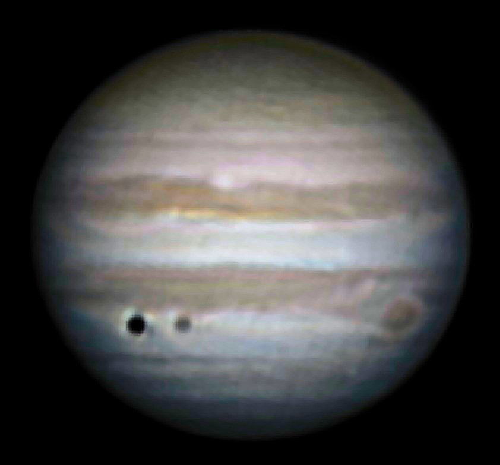
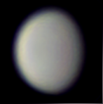
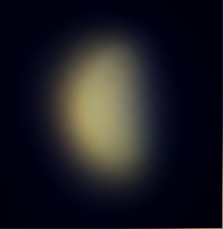
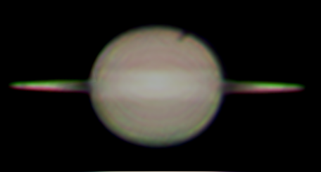
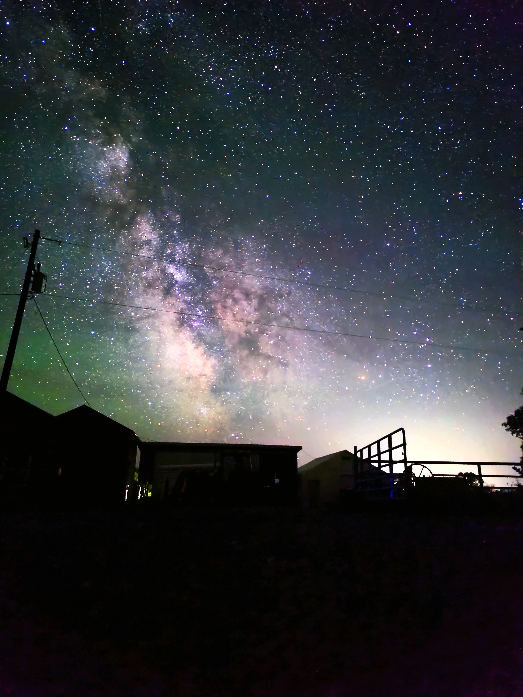
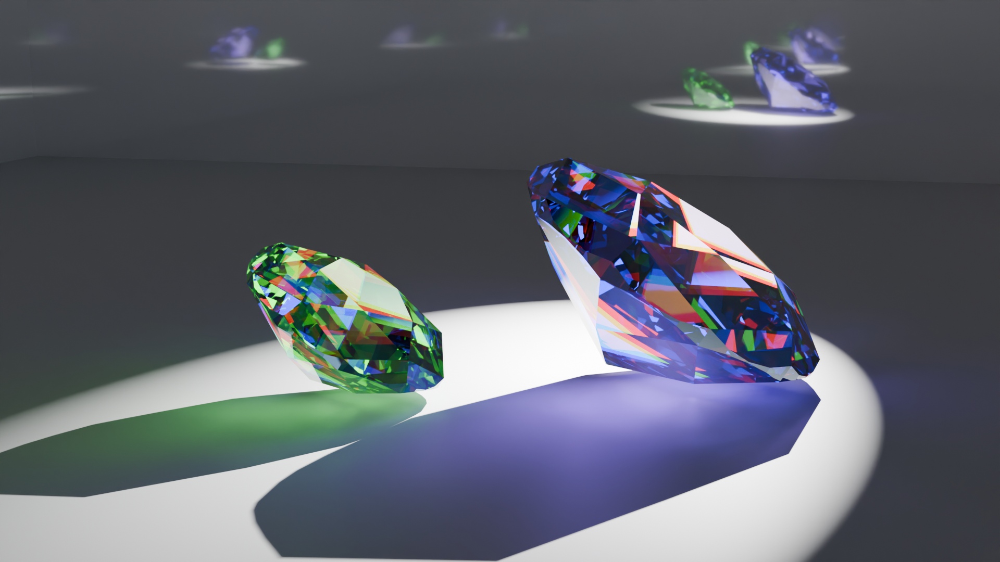

Home
This website is still under construction.
Hello, I'm Logan, and I go by the alias meiscoolbutmo (note: this includes abandoned AI tools as I used to be pro-AI but have since moved on, don't worry, those accounts are inactive). Anybody identifying themselves on the internet as "meiscoolbutmo" as of 2025 is me. I mainly create content such as gaming, astronomy, animation, or blends of those three with or without surrealist or absurdist themes.
Upcoming Youtube Content
There is some content that is planned, and hasn't came out yet. This stuff is basically confirmed to happen at some point in the future of the MEISCOOLBUTMO channel:
•Whenever Billie Bust Up comes out, I will stream it, maybe in one whole sitting
•A new space size comparison is in production and will probably be released in early 2026
•The vague idea of "gaming with another person" appeals to me, so there might be friend gaming
One thing to note about these is that they aren't super specific and the dates are subject to change, largely because I am the ruler of procrastination.
A Quick Overview
My name is Logan and I was born in the United States on the 20th of January, 2011. Since around early 2017, I've lived very rural in the middle of nowhere, yet still "mysteriously" connected to the internet. I really like space and it's been a long-lasting intrest of mine since 2014-ish.
I have one sister named Clara who was born in late 2014, three cats named Julea, Finn, and Wanda, a dog named Hank, several fish whom my sister Clara claims to know the names of, and a bearded dragon named XENA WARRIOR DRAGON that my tragically middle aged dad absolutley adores.
I like some video games like Minecraft, Terraria, and Kerbal Space Program. I've also streamed or made videos on a lot of other games like Wobbledogs, Pikuniku, Indigo park, and Universe Sandbox 2, which I have had since around 2017. In (hopefully) 2026, whenever Billie Bust Up releases, I will play it, and I can guarantee that I will be terrible at it but I will also have way too much fun for my own good. Those character designs are absolutley fantastigorgolamazing.
Dislikes
Most people list the things they like, but honestly, why do that when nobody is stopping you fron listing the things you don't like?
Just be warned, some of these are hot takes:
•I don't like sports, espescially American Football
•I don't like seafood, most pasta (I know, sacrilegous), or most things tomato
•I don't like it when people scream at me yet I love to scream myself
•I don't like discrimination based on skin color, sex, gender, sexual orientation, diability, or any other factors
•I don't like misinformation, pseudoscience, or conspiracy theories. If you have a conspiracy theory, I will out-conspiracy you to shut you up.
•I don't like baths and instead strongly preffer showers
•I don't like small dogs. One time a small dog almost ate my face and killed me as an infant.
Overall, I'm a difficult person, as you can clearly see. Lol.
Likes
Now that we've taken a look at my outrageous sins, we can see what I do like:
•I like things more if they are creative, and/or cute (in an "aww" way, not a sophomore girl wearing trendy clothes way)
•I like Subway and Arby's and McDonalds. From Arby's I ALWAYS order 5 chicken tenders, 4 or 6 mozzerella sticks, bronco berry sauce, and a vanilla shake/strawberry lemonade. If I could, I would order more chicken.
•I like cats much more than I like dogs.
•I like Android more than Apple, although when reffering to the fruit, I love apples. On average (mode), I eat one apple a day.
•I like swimming and waterparks a whole lot.
•I like space a lot.
Random Facts (Specific but not important information)
Everybody has just miscellanious information about them, and this is the dedicated corner of the internet where mine go:
•My vocal type can be described as a bass baritone with a freakish high extension. Not counting the weird low vocal fry subharmonic thing I can do, I can go from around D2 or E2 up to G6.
•My house is over 100 years old and is made out of pine.
•My eyes are greenish gray.
•My previously mentioned cat Finn loves to play the pinao (He walks along the keys).
•Paper wasps used to crawl from out of the indigo painted wood plank floors, but now they do not since I have covered the holes with large, mostly hardcover books. I used to store things in the closet that rains mouse poop but I had recently moved everything out into the open for ease of acess and the elimination of the turd rain, whcih is not a good thing to have raining on your personal belongings.
•Behind and to the left of my monitor on my desk, I store my copy of Cards Against Humanity. It is unopened and still has the plastic over it. At least I used to, because now that I've reorganized my room, the card game sits on a bamboo shelf.
•I can only speak English fluently, and in russian, I only know how to say "this" and "I am a bicycle".
Freinds
Astrophotography
My best image of Jupiter I have ever taken with my telescope, showing Ganymede and its shadow as little discs in the bottom left of the image. The Great Red Spot is also visible here along with detail in the stripes.
Another great image I took of Jupiter. In it you can see the Geat Red Spot clearly and the shadow of the moon Io. Io itself is visible as a slight yellowish speck above the Great Red Spot.

One of my favorite images of Venus I have ever took, showing its color, (lack of) surface detail, and gibbous phase nicely.
This one is of the planet Mercury, clearly showing a bit of a half phase leaning on gibbous. It is blurry because Mercury is always very close to the Sun, meaning at best, you might see it hanging around very low in the sky at twilight, and when something is low in the sky, it is blurrier.
This one is the planet Saturn very near a ring plane crossing, when the rings are seen edge-on.I don't really know why the rings have split into green and pink, that is an artifact.Also in the top left of the image you can see two little smudges. The one extending off of Saturn's disc on the edge that is darker is Titan's shadow, and the lighter one that is not on the edge of the disc is the moon Titan itself.
I took this photo of the Milky Way Galaxy around a kilometer and a half from my house, specifically at my grandma's house. She's a really nice grandma: she makes a bunch of desserts!
Visual Art
Here is my imagining of the Earth as it appeared around 466 million years ago I made in Blender.

Here's a little comparison I made of Pluto, Eris, and Makemake, also in Blender.

Here is a render of some gemstones I made in Blender. You can even see caustics. Caustics are so pretty.
Also made in Blender, I made this reimagining of Modern Earth if it had rings. Notice the redistribution of foliage.